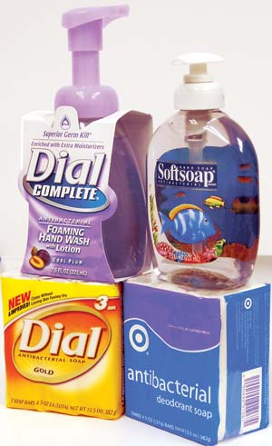

If you choose “antibacterial” products because you trust them to kill germs, think again. According to recent studies, antiseptic ingredients added to numerous products are not effective and may actually be harmful.
In 2005, a U.S. Food and Drug Administration (FDA) panel concluded that there is “no added benefit” from using antimicrobial products over plain soap and water. There’s also toxicity to consider. Researchers at Johns Hopkins Bloomberg School of Public Health discovered that one of the most popular antimicrobials, the pesticide triclocarban (TCC), defies water treatment methods after we wash our hands of it. Once it’s flushed down drains, about 75 percent of TCC makes it through treatments meant to break it down, and it ends up in our surface water and in municipal sludge. This sludge is regularly applied to U.S. crop fields as a fertilizer, meaning the chemical could potentially accumulate in our food, too.
According to Rolf Halden, assistant professor in the Department of Environmental Health Sciences at Johns Hopkins and lead author of the most recent study, TCC contaminates 60 percent of U.S. streams. In addition, he says it is known to cause cancer and reproductive problems in mammals, and blue-baby syndrome in human infants.
Introducing an antimicrobial into the environment in this way also has the unwanted effect of increasing pathogens’ resistance to clinically important antibiotics. The antiseptic triclosan - another popular antimicrobial added to numerous products - is known to promote the growth of resistant bacteria, including E. coli. In fact, the American Medical Association (AMA) took an official stance in 2000 against adding antimicrobials to consumer products. The AMA has repeatedly urged the FDA to better regulate these chemicals, advising that they should be avoided “until the data emerge to show antimicrobials in consumer products are effective at preventing infection.”
Currently, there is no mandatory monitoring of TCC, but approximately 1 million pounds of it are released annually in the United States. Since 2000, about 1,500 new antibacterial products have hit store shelves.
Halden says the irony of his research is two-fold: “First, to protect our health, we mass-produce and use a toxic chemical which the FDA has determined has no scientifically proven benefit. Second, when we try to do the right thing by recycling biosolids, we end up spreading a known reproductive toxicant on the soil where we grow our food.” He emphasizes the importance of considering the full life cycle of the chemicals we manufacture.
|
 MATTHEW T. STALLBAUMER Antibacterial products aren’t any more effective than soap and water, and they can actually be harmful. |
MATTHEW T. STALLBAUMER |
|